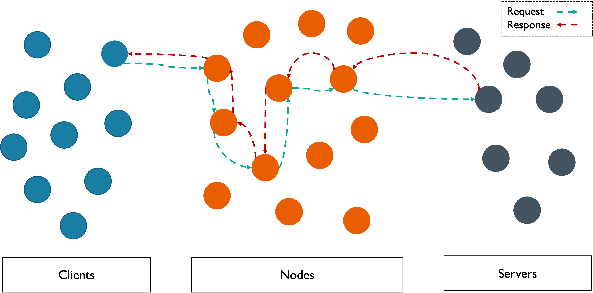

What Other Systems Does This Work For?
Example: Onion Routing Protocol
If a client receives a response, then the client must have sent a matching request.

Every message chain follows the path:
Client
Node
+
Server
Node
+
Client
Example: Two-Phase Commit
All participants agree to either commit or abort.
Prepare → Vote → Decision → Ack
But what happens between
Vote → Decision
?
Reed, Syverson, and Goldschlag (1998); Gray (1978); Ayari (2010);
Empirical Eval
;
Happened-Before Comparison
;
k-States Comparison